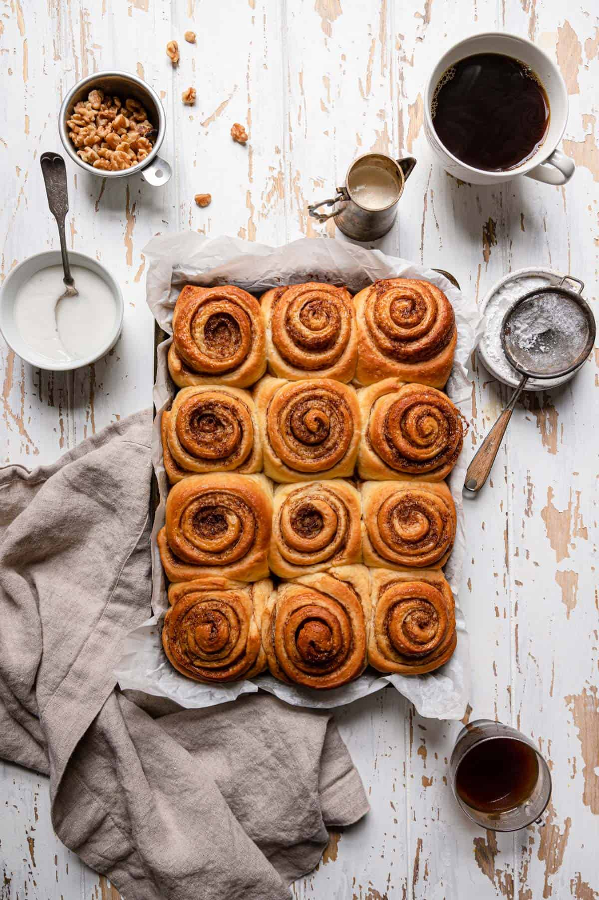

Cinnamon Rolls

Cinnamon rolls are a type of sweet baked pastry made from a dough that is rolled out, spread with a mixture of cinnamon, sugar, and butter, and then rolled into a log shape. The log is then sliced into individual rolls, which are placed in a baking dish and baked until they are golden brown and fully cooked.
Ingredients
- All-purpose flour
- Yeast
- Milk
- Granulated sugar
- Unsalted butter
- Eggs
- Salt
- Ground Cinnamon
- Brown sugar
- Powdered sugar
- Milk or heavy cream
- Vanilla extract
- Chopped nuts
- Raisins or dried fruits
The process of preparing the delighful cinnmon rolls.
- In a small saucepan, heat the milk until it's warm but not boiling. Remove from heat and let it cool slightly.
- In a large mixing bowl, combine 2 cups of flour, yeast, sugar, butter, eggs, and salt.
- Add the warm milk to the mixture and mix until well combined.
Gradually add the remaining flour, 1/2 cup at a time, until the dough comes together.
- Turn the dough out onto a floured surface and knead for about 5-7 minutes, or until it becomes smooth and elastic.
- Roll out the dough into a large rectangle, about 1/4 inch thick. Spread the softened butter over the dough's surface.
- In a bowl, mix together the brown sugar and ground cinnamon for the filling.
- Sprinkle the cinnamon-sugar mixture evenly over the buttered dough.
- Starting from one long edge, tightly roll up the dough into a log.
- Using a sharp knife or dental floss, cut the log into slices, about 1 to 1.5 inches thick.
- Place the cinnamon roll slices into a greased baking dish, leaving a little space between each roll.
- Cover the baking dish with a clean kitchen towel and let the rolls rise in a warm place for about 1 hour, or until they have doubled in size.
- Preheat the oven to 350°F (175°C).
Once the rolls have risen, bake them in the preheated oven for about 20-25 minutes, or until they are golden brown and fully cooked.
- In a bowl, whisk together the powdered sugar, milk or cream, and vanilla extract (if using) until smooth and creamy.
- Drizzle the glaze over the warm cinnamon rolls.
- Allow the cinnamon rolls to cool slightly before serving.
- Serve the warm cinnamon rolls and enjoy their deliciousness!
Go back to Home page